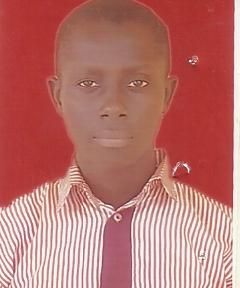

SULAYMAN Mubarak, Babatunde
mubaraksulayman@gmail.com
+2348163013606
Fell in love with collaboration and knowledge exploration with the slogan "ideas worth stealing".
Am just me - puts passion, commitment, organization, simplicity and sincerity in all.
Education
- 400 Level Computer Engineering
University of Ilorin
Work Experience
- Product Development Intern, Lofty Inc Allied Partners Head Quarters (August 2017 - till date)
- Logistics and Concept Engineer/Manager, scoolnetwork.com (2016 - till date)
Honours / Awards
- Finalist, Chemical Society of Nigeria Competition 2012
- 1st Runner-up, Kwara State Chapter, Chemical Society of Nigeria Competition (2012)
- 2nd Runner-up Queen School (Ilorin) Art Exhibition Week Quiz Competition (2010)
- 3rd Overall Best Student,Kwara State College of Education, Model Secondary School, Class of 2013 (2007–2010)
-
- Over all Best Student, Ideal Nursery and Primary School, Class of 2008 (2003–2007)
Skills
- Programming: C/C++, Java, Matlab and Scratch
- Electronics: Multisim,Livewire and Proteus
- Programming: C/C++, Java, Matlab and Scratch
- Electronics: Multisim, Livewire and Proteus
- Networking: Cisco Network Packet Tracer
- Design: Microsoft Office and Corel Draw
Interest
- Artificial Intelligence, Cryptography and Embedded Systems
Co-curricular Activities
- Member, Constitution Drafting and Review Committee, The Department of Computer Engineering (2017)
- Member, Students’ Association Registration Committee of The Department of Computer Engineering (2017)
- Vice Community Builder, Andela Student Ambassador Program (May 2017 till date)
- Member and Media Head, Engineering Projects Exhibition (EPEX) of Nigerian Universities Engineering Students’ Association, University of Ilorin (2017)
- Member, Academic Committee Nigerian Universities Engineering Students’ Association, University of Ilorin (2016 - 2017)
- Editorial Board Nigerian Universities Engineering Students’ Association, University of Ilorin (2016 - 2017)
- Coordinator, The Department of Computer Engineering Maiden Symposium (January 2017)
- Chairman Students’ Committee, The Department of Computer Engineering, University of Ilorin (2016 - 2017)
- Class Representative,The Department of Computer Engineering, University of Ilorin (2014 – till date)
- HeadBoy, Kwara State College of Education, Model Secondary School, Class of 2013 (2012 – 2013)
- Chairman Acting Prefect Committee, Kwara State College of Education, Model Secondary School, Class of 2013 (2012 – 2013)
- Timekeeper, Kwara State College of Education, Model Secondary School, Class of 2013 (2011 – 2012)
- Class Captain, Kwara State College of Education, Model Secondary School, Class of 2013 (2010 – 2013)
- Assistant Class Captain, Kwara State College of Education, Model Secondary School, Class of 2013 (2008 – 2010)
- Timekeeper, Ideal Nursery and Primary School, Class of 2008 (2006 – 2007)
- Class Monitor, Ideal Nursery and Primary School, Class of 2008 (2003 - 2007)